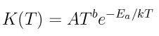
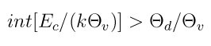
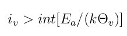

14.83. react command¶
Syntax:
react style args
style = none or tce or qk or tce/qk
args = arguments for that style
none args = none tce args = infile infile = file with list of gas-phase chemistry reactions qk args = infile infile = file with list of gas-phase chemistry reactions tce/qk args = infile infile = file with list of gas-phase chemistry reactions tce/kk args = infile infile = file with list of gas-phase chemistry reactions
Examples:
react none
react tce air.tce
react qk air.tce
Description:
Define chemical reactions to perform in the gas phase when particle-particle collisions occur. See the surf_react command for specification of surface chemistry reactions.
The none style means that no chemistry will be performed, which is the default.
For other styles, a file is specified which contains a list of chemical reactions, with their associated parameters. The reactions are read into SPARTA and stored in a list. Each time a simulation is run via the run command, the list is scanned. Only reactions for which all the reactants and all the products are currently defined as species-IDs will be active for the simulation. Thus the file can contain more reactions than are used in a particular simulation. See the species command for how species IDs are defined.
The reaction models for the various styles are described below. When a pair of particles collide, the list of all reactions with those two species as reactants is looped over. A probability for each reaction is calculated, using the formulas discussed below, and a random number is used to decide which reaction (if any) takes place. No check is made that the sum of probabilities for all possible reactions is <= 1.0, but that should normally be the case if reasonable reaction coefficients are defined.
The format of the reaction file is the same for all three of the currently defined styles, and is also described below. The various styles interpret and compute the specified reactions in different ways. The data directory in the SPARTA distribution contains reaction files for these reaction models, all with the suffix “.tce”.
The tce style is Bird’s Total Collision Energy (TCE) model. When this style is specified, all computed reactions will use the TCE model.
Using kinetic theory, the TCE model allows for reaction probabilities to be defined based on known, measured, reaction rates. The model is described in detail in [Bird94]; see chapter 6. The required input parameters for each reaction (discussed below) are values that permit its effective Arrhenius rate to be calculated, namely

where K(T) is the forward reaction rate, T is the temperature of the participating molecules which is a function of their velocities and internal energy states, k the Boltzmann constant, and A,b,Ea are input parameters as discussed below.
All 5 reactions coefficients read from the reaction file (described below) are used to calculate terms in equation 6.10 of [Bird94] for the probability that a reaction takes place.
The C2, C3, C4 values are the Arrhenius activation energy Ea, prefactor A, and exponent b, used in the rate formula above.
The qk style is Bird’s Quantum-Kinetic model (QK). When this style is specified, all computed reactions will use the QK model.
The QK model implemented is that of [Bird09] as validated [Gallis09] and modified [Gallis10].
The QK model depends solely on properties of the colliding molecules and unlike the TCE model makes no use of measured reaction rates or adjustable parameters. The macroscopic properties used in the QK model are the available collision energy, activation energies, and quantized vibrational energy levels.
According to the QK model dissociation reactions take place when the maximum obtainable vibrational energy after an inelastic energy exchange is higher than the dissociation level [Bird09].

Exchange reactions take place when the vibrational energy after a trial energy exchange is above the activation energy of the exchange reaction [Gallis10].

A new version of the QK model for exchange reactions has been proposed by [Bird11]. This will be implemented in future releases of SPARTA.
For the QK model, SPARTA reads the same 5 coefficients per reaction from the reaction file (described below) as for the TCE model. Three of the coefficients (C1,C2,C5) are used to calculate terms in equation 6.10 of [Bird94] for the probability that a reaction takes place. The Arrhenius rate parameters C3 and C4 are ignored by the QK model.
The tce/qk style is a hybrid model which can be used to compute reactions using both the TCE and QK models. When this style is specified, reactions from the input file that are flagged with an A = Arrhenius style will be computed using the TCE model. Reactions from the input file that are flagged with a Q = Quantum style will be computed using the QK model.
The format of the input reaction file is as follows. Comments or blank lines are allowed in the file. Comment lines start with a “#” character. All other entries must come in 2-line pairs with values separated by whitespace in the following format
R1 + R2 + ... --> P1 + P2 + ...
type style C1 C2 ...
The first line is a text-based description of a single reaction. R1, R2, etc are one or more reactants, listed as species IDs. P1, P2, etc are one or more products, also listed as species IDs. The number of allowed reactants and products depends on the reaction type, as discussed below. In most cases there is no restriction on the order or listed reactants or products on what species are listed. Exceptions are detailed below. Note that individual reactants and products must be separated by whitespace and a “+” sign. The left-hand and right-hand sides of the equation must be separated by whitespace and “–>”.
The type of each reaction is a single character (upper or lower case) with the following meaning. The type determines how many reactants and products can be specified in the first line.
D = dissociation = 2 reactants and 3 products
E = exchange = 2 reactants and 2 products
I = ionization = 2 reactants and 2 or 3 products
R = recombination = 2 reactants and 1 product (see below)
A dissociation reaction means that R1 dissociates into P1 and P2 when it collides with R2. R2 is preserved in the collision, so P3 = R2 is required.
An exchange reaction is a collision between R1 and R2 that results in new products P1 and P2. There is no restriction on the species involved in the reaction.
An ionization reaction with 2 products is typically a collision between R1 and R2 that results in a positively charged ion and an election. However, SPARTA does not check for this, so there is no restriction on the species involved in the reaction.
An ionization reaction with 3 products is typically a collision between a neutral R1 and an electon R2 which ejects an electron from the neutral species, resulting in P1 and P2. Again, SPARTA does not check for this, so there is no restriction on the species involved in the reaction. R2 is preserved in the collision, so P3 = R2 is required.
A recombination reaction is a collision between R1 and R2 that results in P1. There is no restriction on the species involved in the reaction.
Note that recombination reactions actually involve a 3rd particle whose species is not altered by the reaction but whose velocity is, in order to balance energy and momentum. So conceptually it can be thought of as both a reactant and a product. There are 3 ways you can specify recombination reactions, to include information about which species of 3rd particles are eligible to participate:
R1 + R2 -> P1
R1 + R2 -> P1 + atom/mol
R1 + R2 -> P1 + P2
In the first case, no info for a 3rd particle is listed. This means any species of 3rd particle can be used. In the second case, a non-species keyword is used, either “atom” or “mol”. This means the 3rd particle must be either an atomic species, or a molecular species. This is based on the vibrational degrees of freedom listed in the species file. A non-zero DOF is molecular; zero DOF is atomic. In the third case, a specific species P2 is listed. This means the 3rd particle must be that species.
Note that for the same R1 and R2, multiple recombination reactions can be listed in the reaction file. When two particles R1 and R2 are selected for collision and a possible reaction, if any recombination reaction is defined for R1 and R2, then a 3rd particle in the same grid cell is randomly selected. Its species P2 is used to match at most one of the possibly multiple recombination reactions for R1 and R2. Only that recombination reaction is checked for a reaction as a possible outcome of the collision.
This matching is done from most-specific to least-specific, i.e. the reverse ordering of the 3 cases above. If there is a defined reaction that lists P2 (third case, most specific), it is used. If not, and there is a defined reaction for “atom” or “mol” that corresponds to P2 (second case, intermediate specificity), then it is used. If not, and there is a defined reaction with no P2 (first case, least specific), then it is used. If none of these matches occur, no recombination reaction is possible for that collision between R1 and R2. Note that these matching rules means that for the same R1 and R2, you can list two reactions, one with P2 = “atom”, and one with P2 = “mol”. And/or you can list multiple reactions of the third kind, each with a unique P2.
IMPORTANT NOTE: If the ambipolar approximation is being used, via the fix ambipolar and collide_modify ambipolar yes commands, then reactions which involve either ambipolar ions or the ambipolar electron have more restricitve rules about the ordering of reactants and products. See the next section for a discussion of these requirements.
The style of each reaction is a single character (upper or lower case) with the following meaning:
A = Arrhenius
Q = Quantum
The style determines how many reaction coefficients are listed as C1, C2, etc, and how they are interpreted by SPARTA.
For both the A = Arrhenius style and Q = Quantum style, there are 5 coefficients:
C1 = number of internal degrees of freedom (as defined by the TCE model)
C2 = Arrhenius activation energy Ea
C3 = Arrhenius prefactor A
C4 = Arrhenius exponent b
C5 = overall reaction energy (positive for exothermic)
The different reaction styles use these values in different ways, as explained above.
If the ambipolar approximation is being used, via the fix ambipolar command, then reactions which involve either ambipolar ions or the ambipolar electron have more restricitve rules about the ordering of reactants and products, than those described in the preceeding section.
Note that ambipolar collisions are turned on via the collide_modify ambipolar yes commands, which in turn requries that the fix ambipolar is defined in your input script. This fix defines a particular species as an ambipolar electron, written as “e” in the reactions that follow. It also defines a list of ambipolar ions, which are written as species with a trailing “+” sign in the rules that follow. Other written species (without “+”) can be any non-ambipolar species.
These rules only apply to reactions that involve ambipolar species (ions or electrons) as a reactant or product.
Ambipolar dissociation reactions must list their reactants and products in one of the following orders:
AB + e -> A + e + B
AB+ + e -> A+ + e + B
Ambipolar ionization reactions with 2 or 3 products must be in one of the following orders:
A + e -> A+ + e + e
A + B -> AB+ + e
Ambipolar exchange reactions must be one of the following orders:
AB+ + C -> A + BC+
C + AB+ -> A + BC+
Ambipolar recombination reactions must be in the following order:
A+ + e -> A
IMPORTANT NOTE: Ambipolar recombination reactions are not yet supported in SPARTA.
Styles with a kk suffix are functionally the same as the corresponding style without the suffix. They have been optimized to run faster, depending on your available hardware, as discussed in the Accelerating SPARTA section of the manual. The accelerated styles take the same arguments and should produce the same results, except for different random number, round-off and precision issues.
These accelerated styles are part of the KOKKOS package. They are only enabled if SPARTA was built with that package. See the Making SPARTA section for more info.
You can specify the accelerated styles explicitly in your input script by including their suffix, or you can use the -suffix command-line switch when you invoke SPARTA, or you can use the suffix command in your input script.
See the Accelerating SPARTA section of the manual for more instructions on how to use the accelerated styles effectively.
Restrictions: none
Related commands:
collide command surf_react command
Default:
style = none
- Bird09(1,2)
Bird, Chemical Reactions in DSMC Rarefied Gas Dynamics, Editor T Abe, AIP Conference Proceedings (2009).
- Bird11
Bird, “The Q-K model for gas-phase chemical reaction rates”, Physics of Fluids, 23, 106101, (2011).
- Gallis09
Gallis, R. B. Bond, and J. R. Torczynski, “A Kinetic-Theory Approach for Computing Chemical-Reaction Rates in Upper-Atmosphere Hypersonic Flows”, J Chem Phys, 131, 124311, (2009).
- Gallis10(1,2)
Gallis, R. B. Bond, and J. R.Torczynski, “Assessment of Collision-Energy-Based Models for Atmospheric-Species Reactions in Hypersonic Flows”, J Thermophysics and Heat Transfer, (2010).